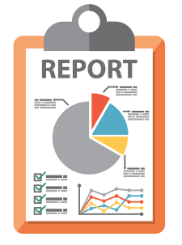

<app-toolbar [title]= "'TP base de datos - grupo 7'"></app-toolbar>
<main>
 
  <div class="buttonOpcions">
    <button mat-raised-button color="primary" class="buttonEncuestas" (click)="navigateToPoll()">
      <br>
      Encuestas
    </button>
    
    <button mat-raised-button color="primary" class="buttonReporte" (click)="navegateToreport()">
      <br>
      Descargas
    </button>
  </div>
</main>
